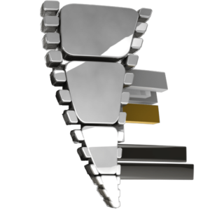

Same idea, sharper execution. Every option keeps the twisted film strip that forms the F, the chrome and the gold bar. We flattened the 3D bevel so it stays crisp at any size, from a phone tab icon to a title card. Pick one and it goes across the site.

Tab icon3D chrome type and strip. Blurs when small, and the bevel looks dated next to the work.
Closest to today. Same stacked "Twisted / Frame", flat chrome, cleaner strip. Clients will recognise it instantly.
Same mark, with the wordmark in wide block capitals to match the new site headlines. Our pick: most elevated, still clearly theirs.
The name runs inside a strip of film that ends in a play arrow. The F mark stays as the tab and social icon.